The men were gathered in the main living area, surrounded by their instruments. Hunnicutt was polishing his French horn, and Meyers was fiddling with his massive double bass, his long, thin fingers popping lightly over the strings. Esme could smell the remnants of breakfast in the warm, cozy room: meaty bacon, fragrant coffee, and toast.
"Good day to you, little lady. We heard you had a bad dream last night. Are you feeling better this morning?" Kurkle asked with a kind smile.
"Heard it, we certainly did!" Meyers exclaimed. Banister shut him down with a disapproving look.
"I’m feeling better," Esme said quietly, trying to ignore Meyers' comment and simultaneously wondering what she’d said in her sleep.
When Esme woke, her clothes had been washed and pressed and were hanging on the back of the door. Stretching, she lay in bed for a moment longer. She could hear the melodic strains of musical instruments being tuned drifting throughout the airship. Resolved about her decision to tell the band the truth, Esme dressed, combed through her tangled hair, and headed out the door.
"You must be ready for breakfast!" Banister piped up, immediately trotting off toward the kitchen, his floppy hair bobbing as he went.
"I am, thank you. But can I please talk to you about something first?"
Banister halted in his steps and turned back into the room.
"I'm sorry. I… I lied to you," Esme began, hesitating. Her face felt hot; she was sure it had turned a nice shade of pink. "I do know who I am. My name is Esme Gray. I'm from New York City. I was on a cruise from Dover, England to Norway with my grandmother, Nana Elsie when I… well, I fell in. I'm not exactly sure what I was thinking, but I was playing on the back of the ship when we hit a wave and I fell in."
Esme paused, stopping for air in the midst of her confession, and barely daring to lift her eyes from the spot a few feet in front of her where she had safely fixed her gaze, averting the inquiring looks of her rescuers.
"I would have died in that water if you hadn’t saved me."
"Oh my," Meyers said with a sniff. Seeming to realize his tone betrayed his surprise, he quickly added, "Well… well, it was our pleasure."
"Yes, that makes sense," Hunnicutt rumbled. "When I went out for a little troll on our boat first thing this morning, I saw a search and rescue helicopter."
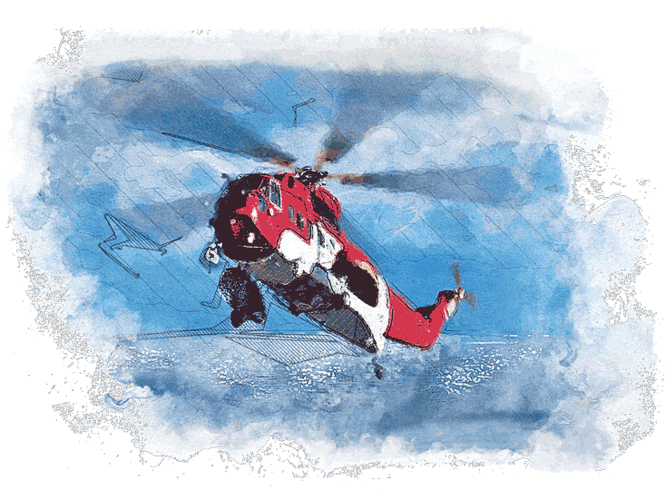"They're looking for me," Esme whispered. She hesitated, trying not to think about how worried her grandmother must be, and then spoke up louder, looking at the men.
"About the dream. So, it wasn't really a nightmare. It’s a memory. It’s real." She paused, and then continued. "My parents were killed in a car accident last summer. That's why I screamed. I can't seem to get rid of it, the memory of it. It's as if…"
Esme's voice trailed off. In that moment, beyond her control, she saw her parents’ faces again, ghostly white, pressed against the glass of their rapidly descending car.
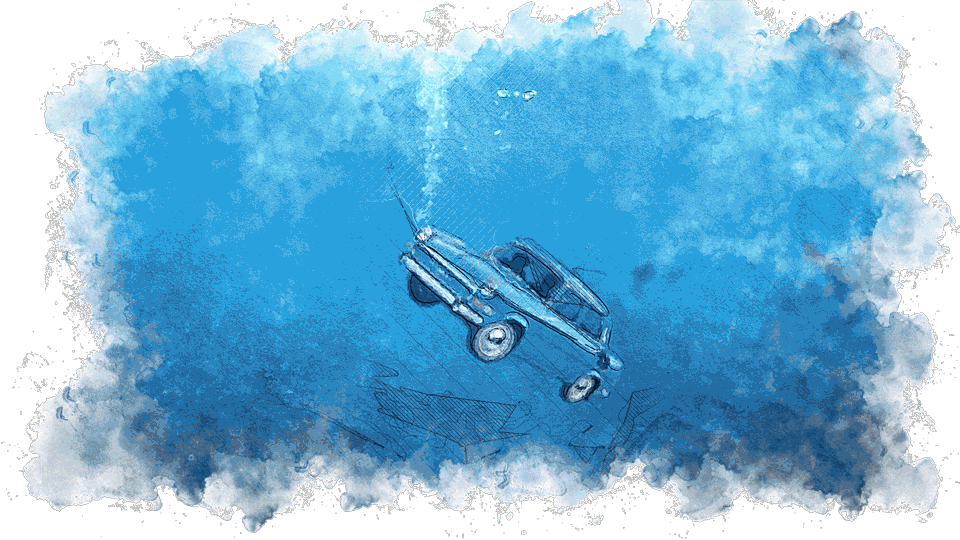The band went quiet as Esmes words sunk in. Hunnicutt stopped cleaning his horn and Meyers hands went still. Banister must have suspected something after her nightmare the night before, maybe they all had. But it was Kurkle who truly seemed to grasp the gravity of her confession. Or maybe it was the look on her face. Standing up from the breakfast table, the bandleader crossed the room to Esme.
"You poor, poor girl," he said in quiet voice, laying a reassuring hand on her shoulder. "What a terrible loss for you. And so young." Surprised, Esme could feel sadness coming off Kurkle in waves. Somehow, though, this actually made her feel better, not worse. Over the last year, she had wished her grandmother had been more expressive in her own grief; warmer and more caring in her response to Esme's loss, and her own. Heidi was her daughter. It was true, her parents had not been not overly affectionate, so huge displays of emotion were somewhat foreign to Esme. But in the year following their death, Esme had been quietly desperate for some type of soothing gesture, for an act of kindness that would demonstrate her grief actually mattered.
Esme swallowed hard to stop tears from coming. She didn't want to cry in front of the band.
"How can we help you?" Kurkle asked. Esme knew he meant it, but there really wasn't much they could do, except to let her stay for a while. But with a formal search and rescue in place and, if she was honest, her grandmother’s natural concern, that request was out of the question.
"I don't think there is, really," she answered. Unlike her school friends, who found it difficult to look at her after the accident, unsure of how to deal with her loss, each one of the band members caught her eye and held it as she glanced around the room. Her sad, pinched face was obviously too much for Banister, though, because the white-haired drummer rushed over and threw his arms around her shoulders, hugging her tightly.
"Don't you worry. You wait and see. Something good will come of this bad event. I promise you," he said kindly.
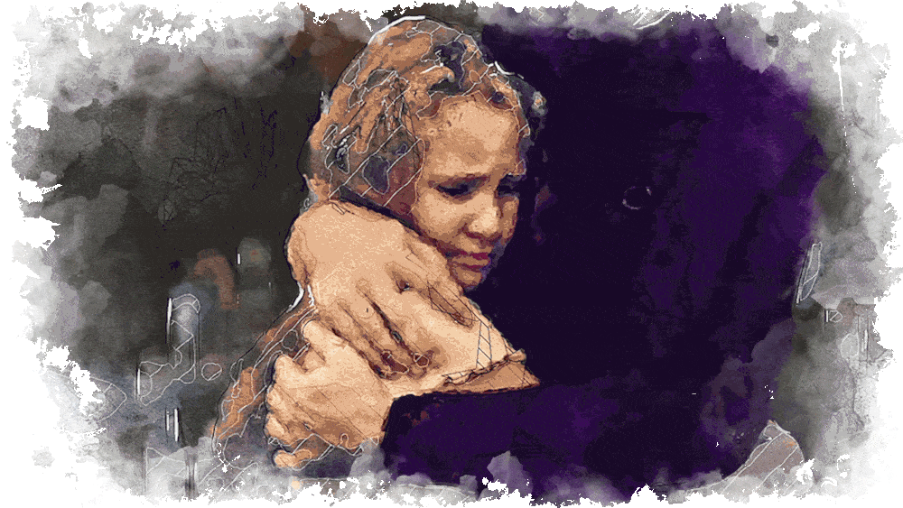Esme smiled, in spite of herself. The drummer didn't mean to, but he was actually smothering her. Kurkle gently pulled Banister away.
“Sir, you will certainly crush her if you’re not careful.”
"Oh, goodness me!" Banister mumbled, flustered.
"I'm okay. Don’t worry." She liked what he had said, the note of hope he struck. Something good was going to come out of this. Somehow.
"I have an idea," Kurkle announced, shifting the somber mood. Looking at Esme, he suggested, "Why don't we get you some breakfast, and then you can join us for a rehearsal!"
"What about letting the ship, or my grandmother, know that I’m… I'm okay?" she asked, confused.
"Right," Kurkle said, turning to the pilot. "Hunnicutt, would you mind cracking on to the Midnight Sun, try to get them on the radio. Esme, we'll let them know you're safe and make sure to return you shortly. So. Breakfast?"
Breakfast did sound good, and she was very curious to hear them play. "I'd love that," she said, relieved that she had told them the truth, letting Banister lead her by the hand to the table.
***
The band's rehearsal space for the morning was a grassy knoll just beyond where the airship was tethered to the ground with massive ropes. Overhead, seagulls wheeled in an overcast sky. A brisk breeze rustled through the grasses.
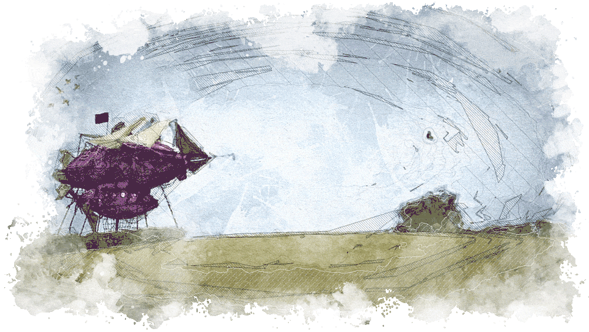Hunnicutt had tried to reach the Midnight Sun without success - something about interference, disturbances and crossed frequencies. Kurkle promised they would try again right after rehearsal.
"So, tell me, what’s the name of your band? And, well… what are you doing on this island in the middle of nowhere?" Having shared her story, Esme was feeling better. Her curious nature was poking through.
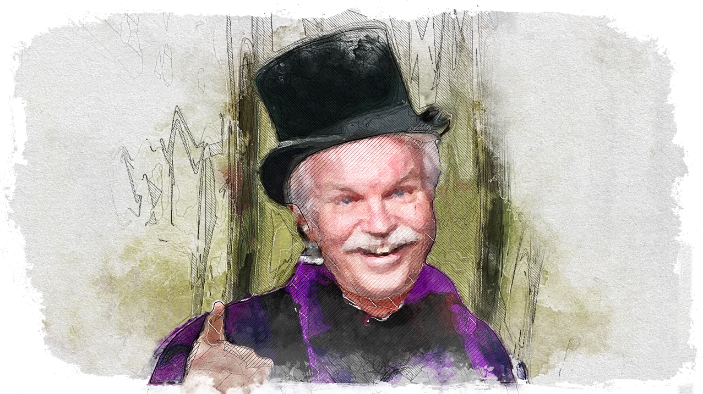"We’re the Black Hats!" Hunnicutt rumbled proudly, tapping the rim of his top hat.
"Ohhhh, of course," Esme nodded, as if she had heard of them before.
"'Seize the Day?'" Banister asked.
"Oh, yeah, sure. Definitely," Esme agreed, nodding a little too vigorously.
"I mean our song, Esme, 'Seize the Day.'" Now Banister seemed confused.
"Allow me," Meyers curled his long arms around the body of his double bass and began playing a tune that Esme recognized immediately.
"Oh, the McDonald's commercial! You wrote that?"
"That's our song. We wrote it as a piece of art, not for a commercial," Meyers said with an indignant huff. "They simply bought it from us."
"And for a mint, I might add," Hunnicutt chuckled deeply, his mustache trembling.
"Cadbury's also used it in the 1980s for their new orange cream bar," Banister added helpfully.
"It was the backdrop of that famous Palmolive commercial in the 70s, remember?" Hunnicutt reminisced. "Boy, did we ever make a pot of gold on that one!"
Esme had never heard of Palmolive. "Very nice. So why are you practicing here? And flying around in that?" she asked, pointing toward the zeppelin.
"Questions, questions," Meyers said dismissively.
"We're preparing for a comeback concert," Banister explained. "'Seize the Day' was our biggest hit, but we had others. The last concert we did was in 1969 and we felt it was time to give our fans what they've been asking for."
"Naturally," Esme nodded. She had never heard of the Black Hats, but that didn't mean anything. She wasn't much into music. And 1969 was a long time ago. It was even before her parents' time.
"We're keeping a low profile as we practice," Kurkle said with his enigmatic smile.
"If you call a purple airship a low profile," Esme pointed out.
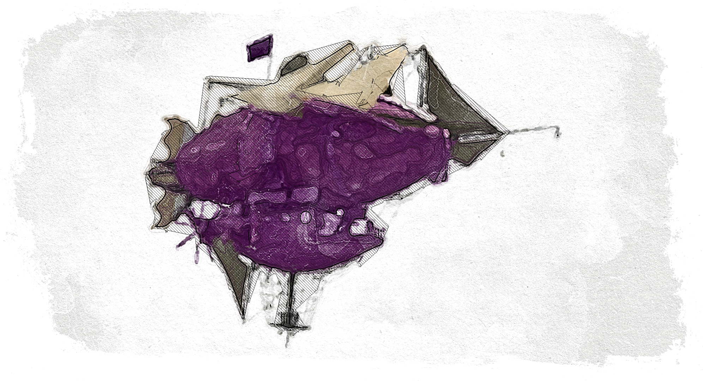"We ride below radar," Hunnicutt explained defensively, leaning forward with a frown. "We have our methods for blending in. I make sure of that."
"The airship is our home away from home and it inspires us," Meyers added primly.
"And staging a comeback performance is no easy feat. You see, of course?" Banister asked kindly.
"I guess," she said, not understanding at all.
"Well, lads, let's crack on, shall we? Young lady, you may take a seat," Kurkle said. He then whipped off his purple raincoat and laid it on a patch of cushiony grass. Gently, the bandleader helped her sit down.
Esme did as she was told, not knowing what to expect from a band of four elderly musicians wearing purple raincoats and black tops. She couldn't remember if she had ever heard anyone play a French horn before in her entire life. Settling onto her perch on the purple raincoat, folding her legs like a yogi, she waited.
A fresh sea breeze blew across the band's grassy, green rehearsal knoll and she closed her eyes, like she did whenever she listened to her favorite music. A minute later, waiting, she wondered what was taking the band so long to start. All she could hear was the sound of the wind. No instruments. No music. Her chin rested in the nest of her intertwined fingers, waiting.
Suddenly, the wind picked up speed, blowing in a forceful gust that swirled around her ears, whispering to her. "Come with me," it seemed to say.
"Where to?" she asked without thinking. Then, startled, her eyes flew open, looking around. "Who was that?" she asked out loud. But what she saw was even weirder than the disembodied voice. For even though the band was deeply engrossed in its craft, she couldn't hear them making music in any manner that made sense to her. All she could hear was the wind. Hunnicutt's eyes were closed as he blew forcefully into his French horn. Meyers' head was bent over his bass guitar, wrapped up in a world of his own. Even Banister seemed to be in a trance. But only the sound of wind filled her ears. Esme glanced at Kurkle, who smiled at her over his flute. And then she heard it again, like a voice in her head.
"Come with me over the sea, through the hills, to the lake."
Who was speaking to her? Confused, Esme studied the band's faces one by one. Resting finally on Kurkle, the only band member who seemed aware of what was happening, Esme felt his eyes pierce hers. It was as if he was speaking to her, without saying a word.
"Come with me to the lake," the voice urged quietly.
Frowning, Esme asked out loud, "What lake? Where?"
"Close your eyes, Esme. Don't be afraid," the voice said in a soothing tone.
Against her better judgment, and almost even against her will, Esme closed her eyes and inhaled deeply. Instantly, she could smell salty air and rain. She could feel moisture collecting on her cheeks. Then, the music soared all around her in a surge of sound. What is happening? she wondered, frightened, wrapping her arms around her knees. Who does that voice belong to? How are they making me feel this way? But instead of opening her eyes, Esme allowed herself to go deeper into herself, as if into a dream - a weird but wonderful dream.
When she did, she recognized, as she had the night before, that being caught up in this adventure had wiped away the ever-present ache of loneliness that had plagued her since her parents' death. Unconsciously, she reached her arms skyward and immediately felt as if the wind had physically taken hold of her outstretched hands. She wanted to open her eyes, to see what was really happening, but she was afraid it would break the moment and send her hurtling back into her sadness, so she fought this natural urge and allowed the music to take her.
Off she raced on a northern breeze, zooming over the sea as its waves tossed below her, their white caps sending spray into her funny hair.
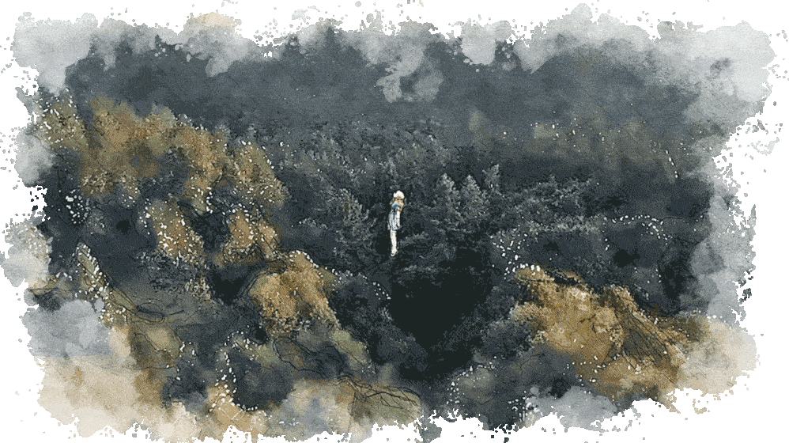"Where are we going?" she asked again, not at all sure to whom she was speaking.
"You'll see," the wind called back. On the horizon, she saw a dark smudge coming into view. Is that land? She was right. First, she could see the rocky edge of a shoreline and then low, green hills falling back where the water pushed forward like a wedge, into the country beyond. "The Moray Firth," the wind whispered, "where the dolphins play." Esme searched the water for the sleek gray mammals, but she saw nothing. They were moving too quickly, starting to head inland.
Below her, the world flew by in a rich green patchwork haze. Ahead, she could see the glimmer of a long, sapphire blue lake flanked by gently sloping hills. And then she was upon it, gliding over its surface, descending fast. She felt the wind, like a cool breath, wash over her face. Gazing into the depths, she was surprised to see something dark slipping along below the lake's surface. "What is that?" The wind didn't answer. Looking closely, she reared up, shocked. "That’s a dinosaur! Wait a minute, where am I?" Memories and rumors of memories started clicking over in her mind, one after the other like cards being shuffled in a deck, faster and faster. A lake, the North Sea, a dinosaur. "The Loch Ness Monster!"
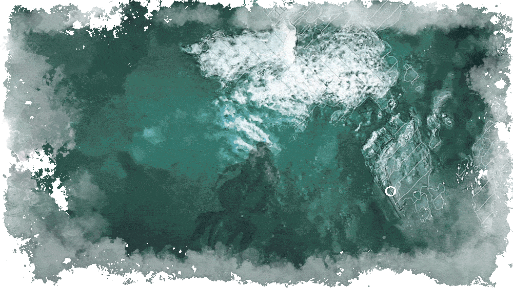"Esme, come with me," the wind called.
"Wait, that’s crazy," she argued, craning her neck, trying to get another glimpse.
Then, everything changed. No cool summer wind, no overcast skies and green pastures and hills. Instead, she saw dusty, tiny alleyways, cinderblock homes, only partially built, and everywhere children dressed in mismatched clothing, many with dirty faces, almost all of them laughing.
"Where are we?" Esme asked the wind, which was now warm and sultry. "Take a look," it whispered. Far away she could see a range of snow-capped mountains, but just below her was a small town, made up of mismatched buildings and narrow, winding roads. A collection of old model cars were parked curbside. There was a sweet-faced donkey with a cart, people congregated in front of homes, and little stores that sold heat-wilted fruit and vegetables in wooden boxes. Looking closer, she saw old men playing cards outside on the street, and young men dancing to a radio or kicking a soccer ball. Girls played with dolls on porch steps. And though everyone seemed poor, no one appeared unhappy.
Who are they?" Esme asked, but the wind didn't answer.
And then she saw him. A boy her age. He was kneeling on the front porch of a house, a small dog cradled in his lap. He had glossy black hair that kept falling over his eyes, even as he lifted his hand to his face every few minutes to push it away. He was skinny - she could tell that even through his t-shirt - but he didn't look sick, just young. She looked closer. The little dog he held was a white, rangy mutt, and it was clearly in distress. She could see its nervous brown eyes darting to and fro, its little body squirming in the boy's expert hands. The dog was hurt, something was wrong with its leg. The boy didn't seem concerned. He held the dog firmly while his fingers gently searched its hind leg. Then, satisfied that he had found what he was looking for, the boy stopped, smiled at the dog and whispered a reassuring word in his floppy ear. The dog calmed, and then in the blink of an eye, the boy deftly snapped its drooping back leg into place. With a yelp, the dog popped off the boy’s lap and began prancing around in the dust at his feet, as if to show off. The boy laughed.
Petting the dog's little head, the boy stretched and stood, presumably to join his friends. There were children everywhere. But instead of moving off into the crowd, he waited for a moment longer, as if he had heard someone call his name.
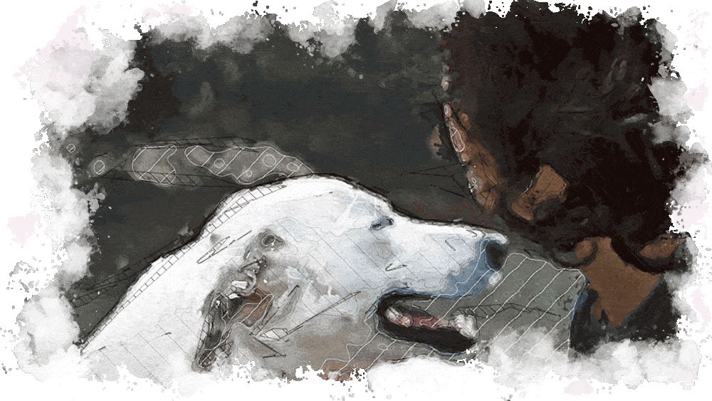His confident, kind face expressed the maturity of someone who might grow up to be a doctor, or a vet, Esme thought. But somehow jobs like that seemed inconsistent with the dusty streets, the children running around who should probably be in school. She felt sorry for the boy. In a place like that, he might never be able to chase a dream.
"Hey," Esme called. The boy was starting to disappear. She wanted to meet him. She didn't have any friends that were boys. All the girls in her class were dating and had boyfriends, but she was too shy. She always felt weird talking to boys about anything other than the basics of schoolwork. Something in this boy's face told her that he could be a friend, that he might not make her feel stupid. She recognized something in him that was familiar, even though she wasn’t sure what it was exactly.
"Esme, time to go."
"That’s not fair," she complained. "I wanted to tell him something."
"He can’t hear you," the wind explained.
"Then you tell him," she snapped.
"Tell him what?"
"Tell him… tell him… I don’t know, tell him to… to not give up!" It was so strange, they hadn't exchanged one word, but she felt that she knew the boy, that she understood something about his life, even though it was so different from her own. For a moment, she felt that she knew what it would be like to have a dream in your heart, to do something bigger than yourself, but not to have the means to do it. There was nothing wrong with being poor, she knew that. In fact, everyone around the boy seemed happy, happier than the friends she had in school. But she also knew that being poor might mean that some of the things he wanted to do might not be so easy to pursue. Not impossible, but harder.
"He knows that. Don’t worry."
"Don't tell me not to worry," Esme said, her old, belligerent self back in action.
"Goodbye Esme," the wind called.
"No, wait!" she yelled in protest. "This is just starting to get interesting!" Esme felt her arms flailing as she tried to stay aloft. She bent her face down, looking for the boy.
"Goodbye." The wind's call was only a flimsy echo now.
"Hello, Esme!" a cheerful voice called.
Esme opened her eyes. She was still sitting with her legs drawn up, her head resting on her knees. "What was that?" she exclaimed, looking around, as if she expected to see the wind in human form.
"What do you mean?" Kurkle asked with a mischievous smile.
Esme said, looking around again, "Oh, come on! You know what I mean. You were playing music, but I couldn’t hear anything. Well, nothing normal. Did you hypnotize me?"
Banister replied kindly, "No. That was our music. We took you for a ride."
"Of our musical styling," Meyers interjected, moving his bass aside and stretching his fingers.
"Wow," she said softly, trying to wrap her head around what had just happened. "I know what I saw and felt, but I don't see how you did it. Unless you hypnotized me." She realized she couldn’t help sounding a bit indignant, like her mother used to when she didn’t trust the answer one of her subordinates offered up under questioning.
"I promise you this, my dear, we did nothing of the sort," Meyers said pointedly.
Esme sat for a moment, thinking. The look on the young boy's face, his quiet confidence, that little town. It all felt so real. Was it?
"That was the Loch Ness, wasn't it?" she asked expectantly, remembering the lake.
"Very good!" Banister nodded, clapping his chubby hands.
"But I thought the monster was a myth?"
"Meyers!" the band intoned as one. "You didn't put Nessie in there, did you?"
Meyers looked hurt and then he chuckled, his fingers smoothing his cravat. "I really can't help myself."
"That was amazing!" Esme breathed. "And that other place, with the boy and the dog."
"People we've met along the way. We put them in our music," Banister said.
"He's… he's a real boy? You didn't make him up?"
Banister smiled at her and shook his head no.
"He seemed, uh, nice." Esme was suddenly embarrassed. She could feel her cheeks flush as she flashed back to the dusty, hot town. She could still see the boy, with his black hair and kind eyes. Someone she might never meet under normal circumstances, but someone she now felt she knew, almost like an old friend.
"He is. He lives in Bulgaria," Kurkle said matter-of-factly.
"Not to be confused with Bulgari," Meyers pointed out. "Very different sort."
"Ha ha, very funny," Esme snickered, rolling her eyes and simultaneously smiling at the silly joke. "I do know the difference between on ex-communist country and a luxury jewelry brand. So, you just play normal instruments and people hear it… or, see things… just like the way I did?" Esme wouldn't have believed it was possible to do something like that, but she couldn't deny what she had just experienced.
Kurkle nodded. "We do. For instance..." the bandleader placed his flute against his lips and etched out a little melody. Immediately, Esme was dozing on a warm summer night listening to the piercingly sweet sound of a nightingale calling to her from outside her window.
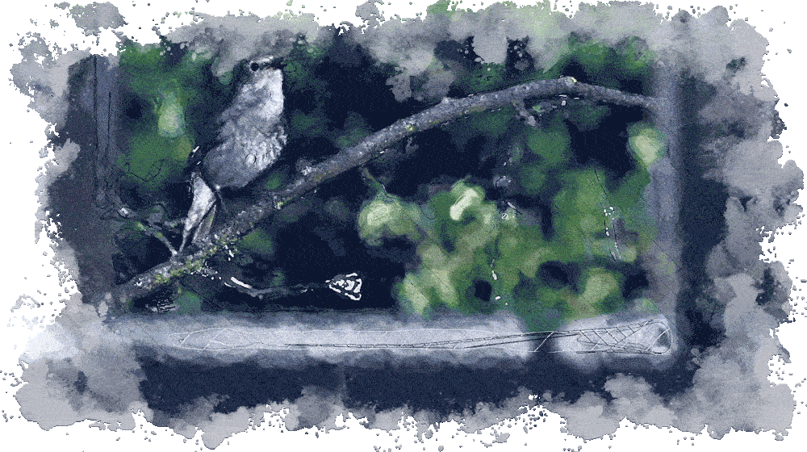"How about this?" Hunnicutt asked. Pulling up his horn he blew a few blasts and Esme was transported to a street in Mumbai, India, overwhelmed by the sudden roar of a city with eleven million people. Brilliant color filled her eyes, cascading from window sills, splashed across billboards, floating down streets clogged with a heaving sea of buzzy motor scooters, bicycles, and cars: burnt orange, magenta, acid green, lemon yellow.
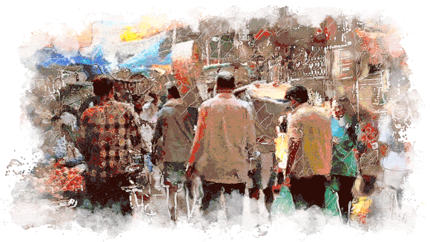And just as quickly as she was thrust in, she was pulled out. Hunnicutt stood in front of her grinning, his strong fingers twitching.
Esme's body vibrated from the scene. "Did you always play like this?" she asked, shocked. If this always happened when they performed, she was surprised she had never heard of them.
Kurkle answered, "No. Back then, we were the Black Hats. But now, we're Klyde Kurkle’s Band."
Esme shook her head. This was a lot to take in all at once. Being inside their music literally gave her the ability to experience what it was like to visit a place far away, a place she had never been to before in her life. But even stranger, and more powerful, the band's music made her feel as if she had actually met someone new, in real life. She could literally imagine what it would be like to not only talk to that boy, but to live in his world, in that hot, dusty little village. It was the weirdest feeling. But not a bad weird, it was fascinating.
"And now we’re going to…" Banister began, but he didn't get a chance to finish his sentence.
The band was gathered on the knoll about a hundred yards from their airship. Esme was prepared for a lengthy explanation when she heard an odd whistling sound, distinctly not the wind. It was a small sound, and probably wouldn’t have registered at all if she hadn't watched the men's faces transform before her eyes. In an instant, they went from relaxed to alert.
"What?" she asked, looking around for the source of the sound.
"Is it him?" Meyers asked, hastily picking up his bass.
"It is," Kurkle said decisively, snapping his flute into its case. "We ought to go." She heard the whistling sound again, but this time it was louder, much louder. Something whizzed by her head, and then exploded just a few feet from the zeppelin.
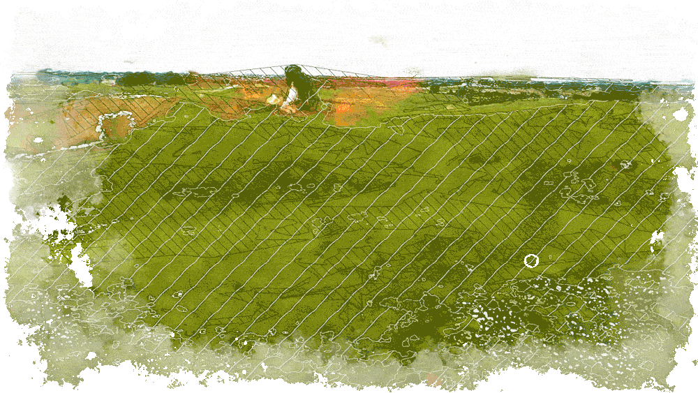"He never was a very good shot," Hunnicutt observed, slinging his horn onto his back and reaching down to help Kurkle with Banister's drum set.
"Where in heaven did he get a rocket launcher?" Meyers asked, grabbing Esme by the arm. She was rooted to the spot, watching the fire lick eagerly at a patch of grass. A little closer, and it would have set the airship alight.
Hunnicutt huffed. "It's a flamethrower. Wonder how he got it up those stairs?"
Just then, Esme heard the whistle again and a fierce, sizzling orange tongue of fire spat at the ground around her feet.
"Seconds men, counting!" Kurkle yelled. All the men were sprinting now toward the airship. Meyers flung the zeppelin's hatch open, pulled out the rope ladder and coaxed Esme inside. Running to a window, she watched as Kurkle and Banister hustled around the zeppelin, releasing the rope lines that kept the ship anchored to the ground. The whole time they were chased by a stinging line of fire.
Inside, Meyers rushed to store their instruments and secure any loose items left on tables from breakfast. It felt like it was taking forever, but really it was only minutes, if not less. Hunnicutt installed himself in the cockpit and seconds later, Esme heard the throaty purr of engines as they flared to life. The airship bumped against the ground as the last line was unleashed, and then Kurkle and Banister came scrambling aboard. Not a second too soon, as one of the jets of fire lashed at a porthole window.
"Oh!" Esme shrieked, backing up. Meyers, not unkindly, guided her to one of the benches and fastened a seatbelt around her lap. She had not noticed them before.
"There when you need them, disappeared when you don't," he chuckled, patting the seatbelt. "Banister insisted that they not 'detract from an otherwise refreshing environment.' Bit of a neat freak, but we’re all the better for it," he added with a smile.
Esme just nodded. She was trembling.
"Out of the fire and into the frying pan, eh?" Meyers continued, eyeing her as he buckled up. "Or, perhaps, out of the drink and into the fire? 'Bout right I'd say, where you're concerned."
Banister admonished the bass player from across the room. "Meyers, stop. You’re scaring her."
"Sorry old girl," Meyers laughed, patting her head. "I certainly don't like these little scrapes with our old nemesis, but they do make me feel alive. And that's saying something when you've hit the big seven-oh."
"What was that?" Esme mumbled, still a bit dazed.
"That was Barnaby," Kurkle remarked, settling back in his seat. Unlike Meyers, he did not appear amused. "And my good man, I hope you’ll look to get your kicks other ways. That was much too close a call for comfort. A little more luck and he'd have blown this ship sky high."
"He'd need a lot more luck than he has to do that," Meyers said, suddenly very serious, his eyes narrowed.
Banister disagreed. "Didn’t look that way to me. I'm with Klyde. That was a close call. A very close call."
"Who is Barnaby?" Esme asked. She was trembling.
"Well, he's not a dragon, if that's what you’re thinking," Meyers grinned, a bit of his dry humor sliding back into place.
"No kidding," she frowned. She was shaking.
"He's an enemy. The worst kind too. A bitter one," Kurkle offered.
"An enemy that wants revenge. But he's not going to get it," Banister added.
"He certainly isn’t," Meyers laughed. "But he just might die trying. Gentlemen, I feel it's a good time for a round. Don't mind if I do." And with that, Meyers produced a flask, took a sip and passed it to Banister.